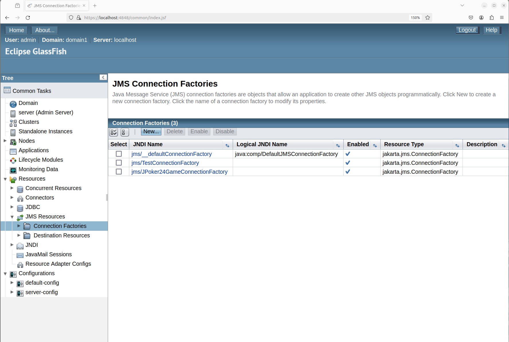
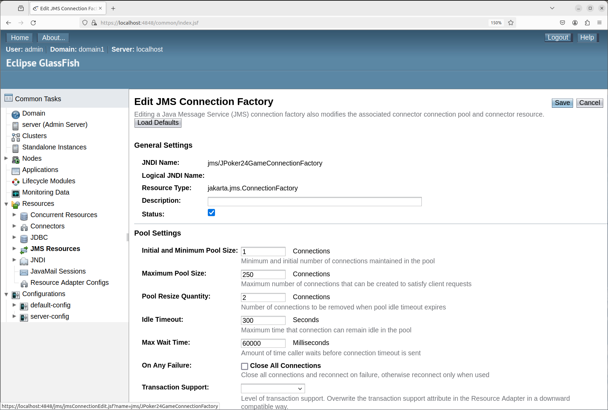
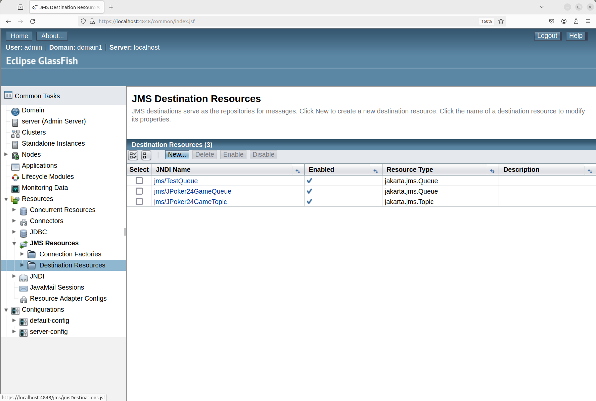
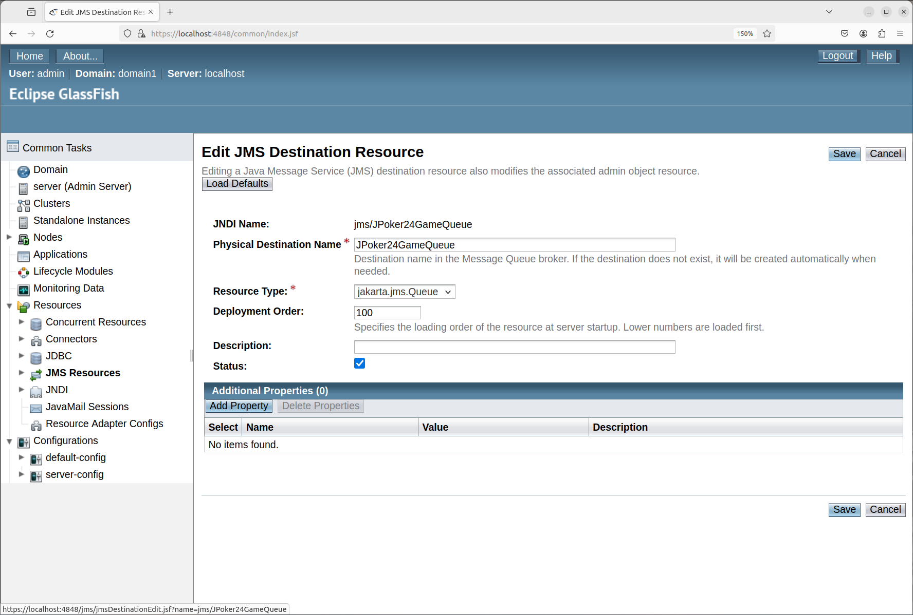
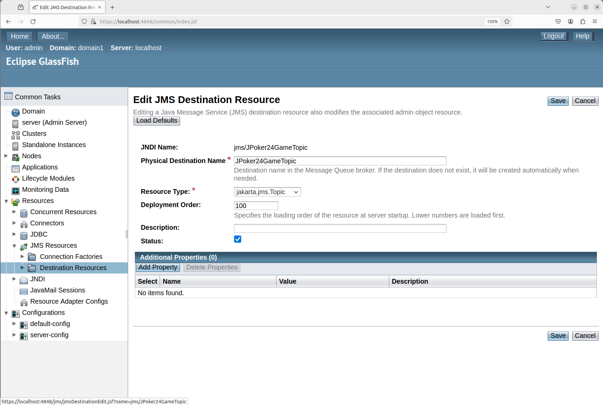

This section provides a guidence on how to set up the environment and run the code.
System
Dependencies
Assumption
Install MySQL server in Linux terminal.
sudo apt install mysql-server
sudo service mysql status
sudo apt install mysql-client
Open MySQL Console.
sudo mysql -u root -p
Set Up Database and Database User.
CREATE DATABASE GameDB;
CREATE USER 'gameUser'@'localhost' IDENTIFIED BY 'gamePassword';
GRANT ALL PRIVILEGES ON GameDB.* TO 'gameUser'@'localhost';
FLUSH PRIVILEGES;
Switch to the Game Database.
USE GameDB;
Set Up Tables.
CREATE TABLE Users (
name VARCHAR(32) NOT NULL,
password VARCHAR(32) NOT NULL,
is_online BOOLEAN NOT NULL DEFAULT FALSE,
PRIMARY KEY (name)
);
CREATE TABLE Games (
id INT NOT NULL AUTO_INCREMENT,
completion_time DECIMAL(10, 3),
PRIMARY KEY (id)
);
CREATE TABLE Participations (
game_id INT NOT NULL,
user_name VARCHAR(32) NOT NULL,
is_winner BOOLEAN NOT NULL DEFAULT FALSE,
PRIMARY KEY (user_name, game_id),
FOREIGN KEY (user_name) REFERENCES Users(name),
FOREIGN KEY (game_id) REFERENCES Games(id)
);
Quit MySQL Console.
\q
Download MySQL JDBC driver mysql-connector-j_8.4.0-1ubuntu22.04_all at http://dev.mysql.com/downloads/connector/j/
Find the mysql-connector-j-8.4.0.jar at .../mysql-connector-j_8.4.0-1ubuntu22.04_all/usr/share/java/mysql-connector-j-8.4.0.jar, and remember the path to it as $mysql_connector_path.
jms package from javax.jms to jakarta.jms. Please DO NOT run this application under Glassfish 5.Follow the tutorial at https://www.howtoforge.com/how-to-install-glassfish-on-ubuntu-22-04/ to download and set up glassfish 6.1.0.
Suppose you follow the guideline and download the glassfish-6.1.0.
Find the gf-client.jar at .../glassfish-6.1.0/glassfish6/glassfish/lib/gf-client.jar, and remember the path to it as $gf_client_path.
Resources -> JMS Resources -> Connection Factories.
New Button on the right Panel to create a JPoker24GameConnectionFactory, the field JNDI Name is jms/JPoker24GameConnectionFactory and the Resource Type is jakarta.jms.ConnectionFactory.
Resources -> JMS Resources -> Destination Resources.
New Button on the right Panel to create a JPoker24GameQueue, the field JNDI Name is jms/JPoker24GameQueue, the Physical Destination Name is JPoker24GameQueue, and the Resource Type is jakarta.jms.Queue.
New Button on the right Panel to create a JPoker24GameTopic, the field JNDI Name is jms/JPoker24GameTopic, the Physical Destination Name is JPoker24GameTopic, and the Resource Type is jakarta.jms.Topic.